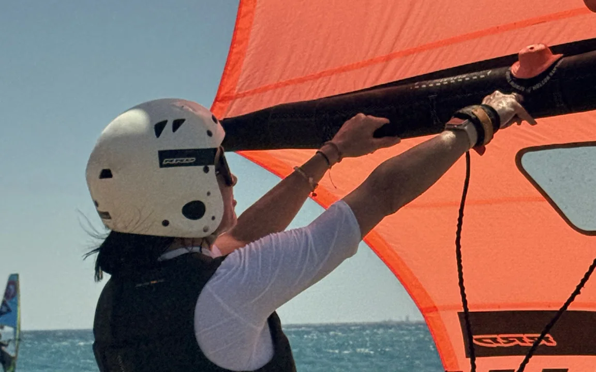
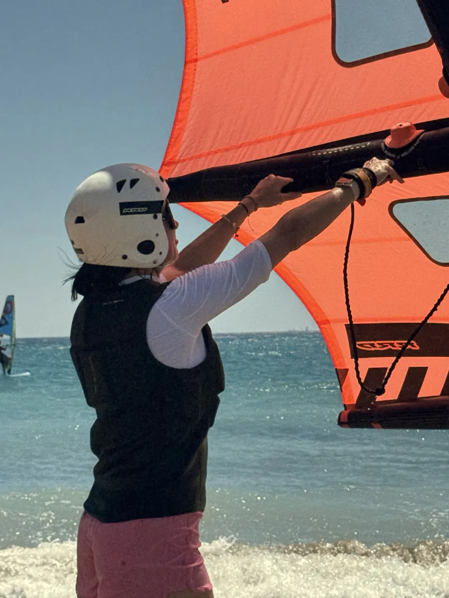
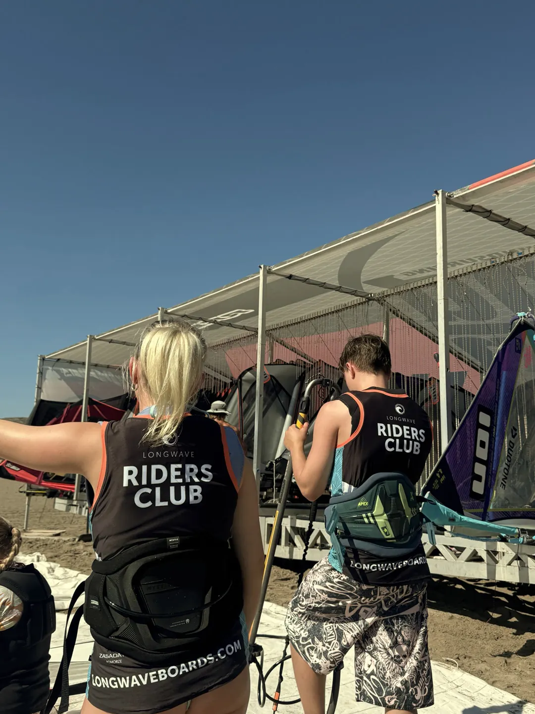
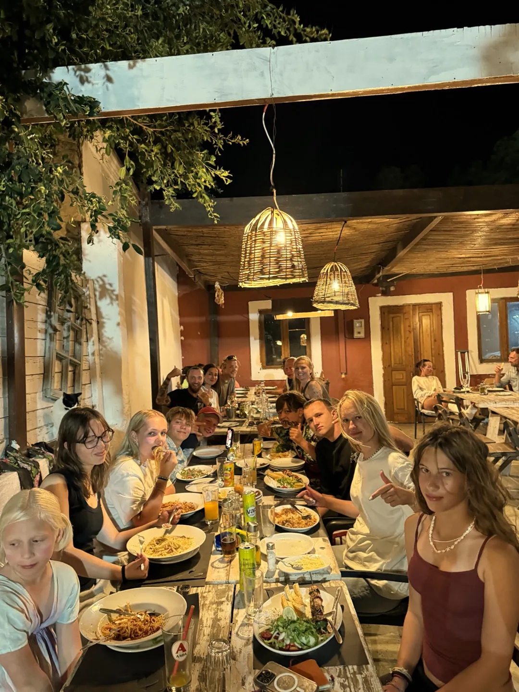
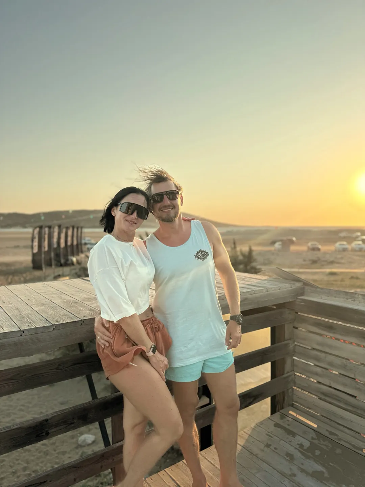
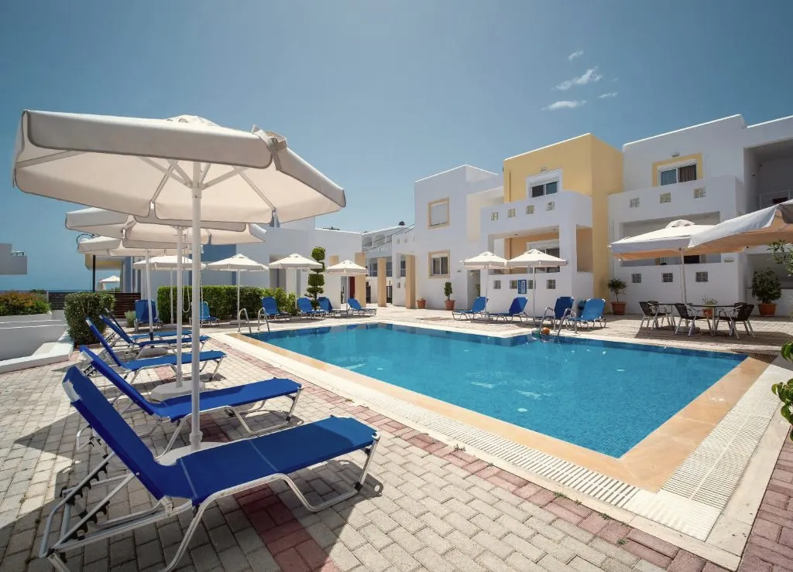
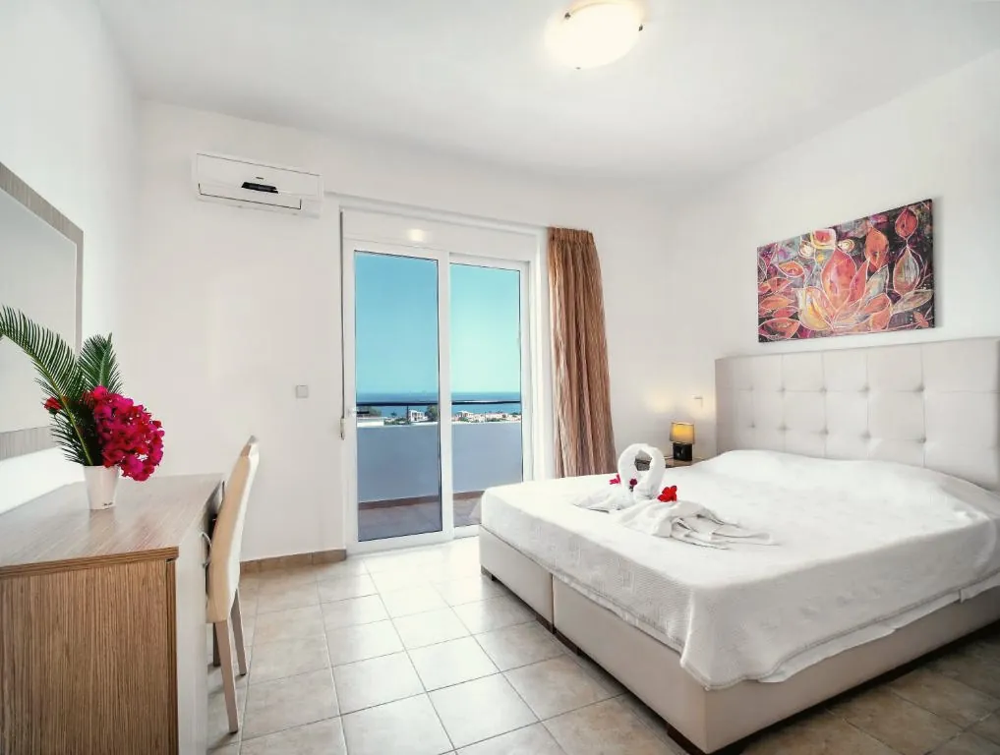
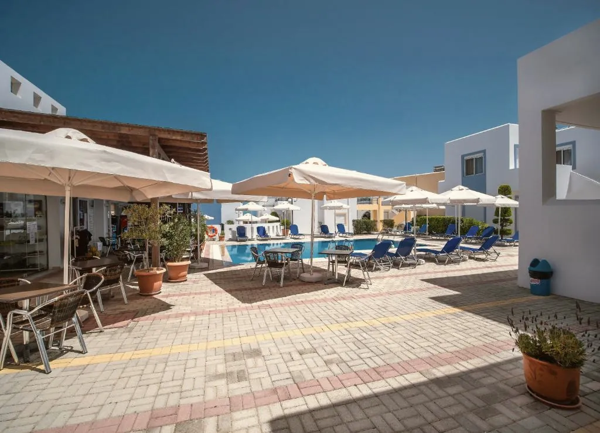

LEGENDARNE PRASONISI
Jeden z najbardziej znanych spotów windsurfingowych na świecie.

PROGRES DLA DOROSŁYCH I RODZIN
Zabieramy Was w miejsce, które pokochaliśmy wiele lat temu! Prasonisi to legendarny spot windsurfingu i wing foila, a dla nas jeden z najbardziej sentymentalnych miejsc.
Czekają nas intensywne treningi na wodzie, polscy instruktorzy, mnóstwo słońca i prawdziwy grecki klimat. Niezależnie od tego, czy dopiero zaczynasz swoją przygodę, czy chcesz wejść na kolejny poziom - tutaj stawiamy na PROGRES!
Po zajęciach? Chill nad basenem, greckie przysmaki, wspólne kolacje i czas z ekipą, która ma tę samą zajawkę.
ludzie z pasją, greckie słońce, dużo czasu na wodzie i ISLAND VIBE!
Jeden z najbardziej znanych spotów windsurfingowych na świecie.
Treningi dopasowane do umiejętności, w kameralnych grupach.
Aktywne wakacje, wspólny czas i swoboda w swoim tempie.
Słońce, baseny, lokalna kuchnia i ekstra atmosfera.
Prasonisi to miejsce, do którego wracamy od lat. I trudno się temu dziwić! Na południu Rodos spotykają się dwa morza - Egejskie i Śródziemne. Z jednej strony fale, z drugiej płaska woda i świetne warunki do nauki oraz doskonalenia umiejętności.
Na tym wyjeździe stawiamy na PROGRES!
Wspólnie z polską bazą Wind4Fun organizujemy szkolenia windsurfingowe i - zgodnie z ofertą danego turnusu - wing foilowe. Pracujemy w małych grupach, maksymalnie pięcioosobowych, dzięki czemu instruktorzy mogą poświęcić każdemu odpowiednią uwagę.
Pierwszy ślizg, pewniejsze starty, nowe manewry czy kolejne halsy w lewitacji? Każdy ma swój cel i każdy progres daje ogromną satysfakcję!
Ale Prasonisi to nie tylko treningi. To również greckie słońce, wspólny czas, nowe znajomości. Jedni chcą maksymalnie wykorzystać czas na wodzie, inni połączyć sport z odpoczynkiem. I właśnie za to lubimy ten kierunek!
Dużo pływania, dużo śmiechu i mnóstwo satysfakcji z własnych postępów.

Na Prasonisi współpracujemy z polską bazą Wind4Fun, którą cenimy nie tylko za profesjonalne podejście do szkoleń, ale przede wszystkim za życzliwych ludzi i miłą, surferską atmosferę.
Doświadczeni instruktorzy, odpowiednio dobrany sprzęt, wsparcie na wodzie i strefa chillu, w której można odpocząć między treningami.
Można tu porozmawiać o sprzęcie, wymienić się doświadczeniami albo po prostu posiedzieć z ekipą i nacieszyć się widokiem na spot.
Profesjonalne szkolenia i świetna atmosfera - czyli tak, jak lubimy!

Kadry LONGWAVE



Po aktywnym dniu wracamy do Gennadi, klimatycznej miejscowości.
Mieszkamy w apartamentach 2-, 4- i 6-osobowych, wyposażonych w łazienkę, klimatyzację, aneks kuchenny, Wi-Fi, taras i sejf.
Na terenie obiektu znajdują się baseny, restauracja oraz przestrzeń do odpoczynku.
W pobliżu mamy lokalne tawerny, sklepy (nawet warzywniaczek ze swiezymi sokami, smoothie - prosto z okienka) i wszystko, czego potrzeba podczas pobytu.
Wieczorami spotykamy się na wspólnych kolacjach, próbujemy greckich przysmaków i odpoczywamy po intensywnych treningach.
Trochę sportowego (czyli najlepszego) zmęczenia, trochę wakacyjnego luzu i dużo greckiego jedzenia!

Kadry LONGWAVE


Prasonisi to przede wszystkim windsurfing i wing foil, ale lubimy też korzystać z uroków wyspy!
Program dodatkowych aktywności dostosowujemy do pogody, warunków na wodzie i charakteru danego turnusu.
Dla dorosłych, par, grup znajomych i rodzin, które lubią aktywnie spędzać wakacje.
Nie trzeba mieć dużego doświadczenia ani świetnie pływać na windsurfingu, żeby pojechać z nami do Grecji.
To miejsce zarówno dla osób, które chcą rozpocząć swoją przygodę ze sportami wodnymi, jak i tych, którzy mają już za sobą wiele godzin na desce i marzą o kolejnym poziomie.
Zapraszamy:
Grupy szkoleniowe dobieramy do poziomu umiejętności uczestników.
Nie każdy musi mieć takie same cele. Ważne, żeby wspólnie dobrze spędzić ten czas!
Chcemy, żebyście mogli skupić się na progresie, wypoczynku i przyjemności ze wspólnego wyjazdu.
Nie ukrywamy, grecka kuchnia to jeden z powodów, dla których tak lubimy tu wracać!
W Gennadi i na Prasonisi znajdziecie restauracje, tawerny i bary z lokalnymi przysmakami.
Posiłki nie są wliczone w cenę wyjazdu. Każdy może wybrać to, na co ma ochotę, ale chętnie spotykamy się również na wspólnych kolacjach.
Po całym dniu na wodzie pyszne greckie jedzenie smakuje jeszcze lepiej!
Spokojny poranek, śniadanie i kawa.
Przygotowanie do treningów, omówienie warunków i planu dnia.
2,5 godziny szkolenia z polskimi instruktorami.
Czas na posiłek, odpoczynek w bazie i wymianę doświadczeń.
Kolejne 2,5 godziny na wodzie. Pracujemy nad techniką, nowymi manewrami i własnymi celami.
Basen, relaks lub czas z rodziną.
Wspólna kolacja w tawernie, lokalne przysmaki, rozmowy i planowanie kolejnego dnia.
To przykładowy dzień treningowy. Liczbę sesji, ich długość oraz godziny szkolenia potwierdzamy w programie turnusu i dostosowujemy do warunków pogodowych.
Bo to miejsce naprawdę dużo dla nas znaczy!
To dla nas wyjątkowe miejsce. Od wielu lat przyjeżdżamy tutaj na własne wakacje, żeby pływać, odpoczywać i cieszyć się tym wszystkim, co daje nam windsurfing.
Dzisiaj możemy zabierać tu również Was. I nie ukrywamy - daje nam to MEGA dużo satysfakcji!
Największą radość sprawia nam obserwowanie Waszych postępów. Pierwsze ślizgi, przełamane bariery, nowe umiejętności i uśmiechy po każdym treningu.
A do tego wspaniali ludzie,którzy do nas przyjeżdzają, wspólne kolacje i atmosfera, dzięki której szybko tworzymy zgraną ekipę.
Super jest spełniać swoje marzenia i jednocześnie pomagać Wam spełniać Wasze!
Zobacz Prasonisi
Zajrzyj na spot, na którym spędzamy dni pełne windsurfingu.
Porozmawiajmy o Twoim wyjeździe
Opowiedz nam, co planujesz. Pomożemy dobrać wyjazd, termin lub program dla Twojej grupy.